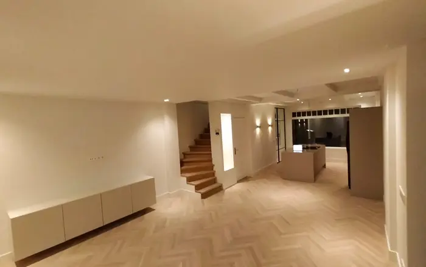
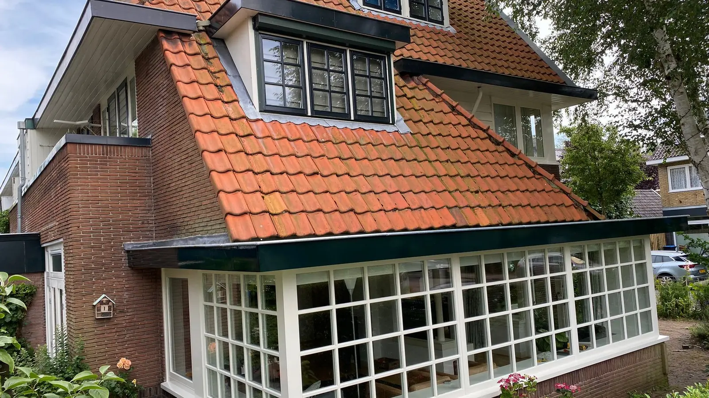
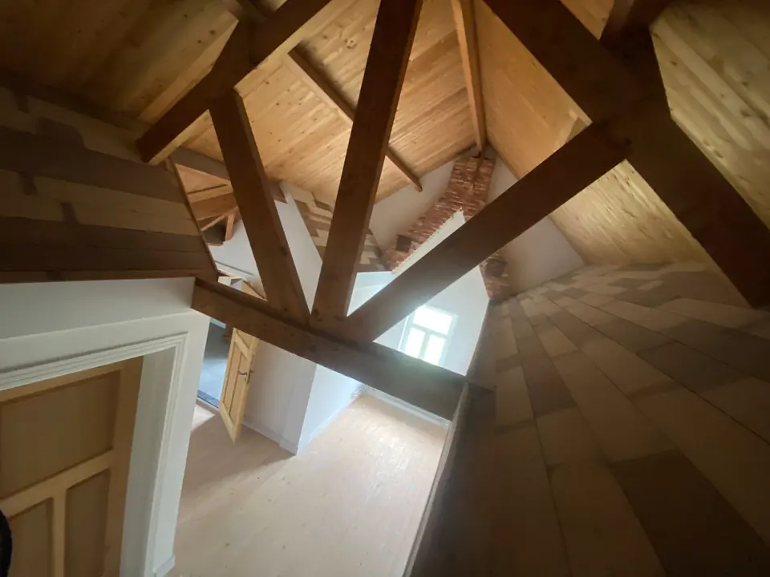
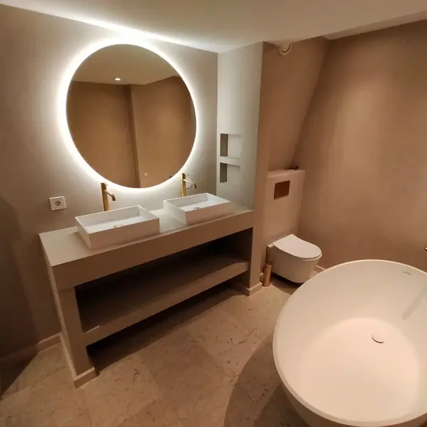
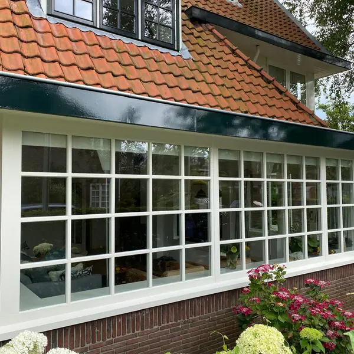
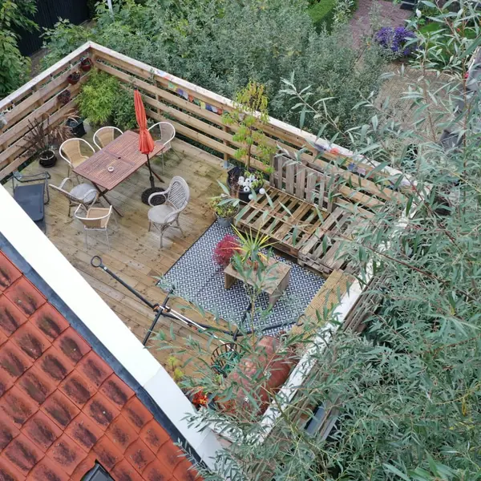
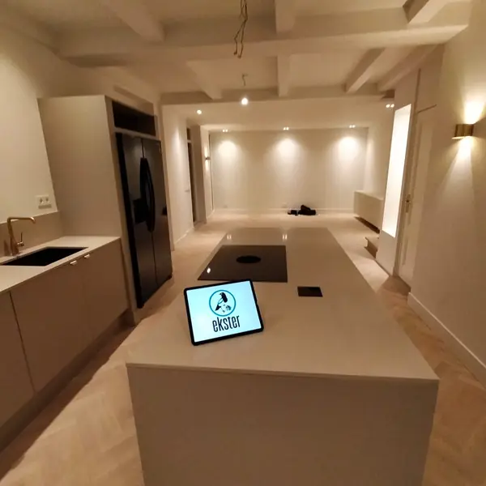
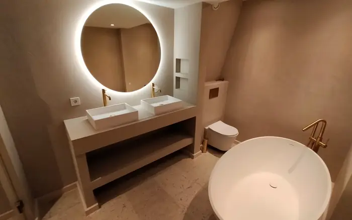
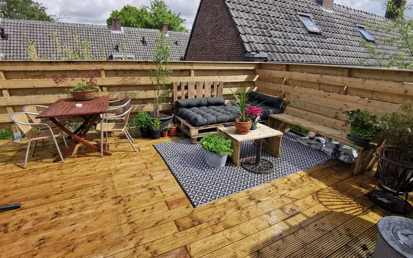

Verbouwen en uitbreiden
Totaalrenovatie, uitbouw, en renovatie en restauratie van monumenten.

Uitbouw · Renovatie · Restauratie · Beheer en verbetering
Ekster pakt elk jaar een aantal totaalrenovaties op en begeleidt u van begin tot eind: van de tekening van de architect tot de laatste afwerking door het eigen team.
Ekster geeft ieder project een eigen code. Eigen foto's van opgeleverd werk, van Nieuwersluis tot Weert.





Renovatie en verbetering van monumentaal en gewoon vastgoed, in drie groepen.

Totaalrenovatie, uitbouw, en renovatie en restauratie van monumenten.

Badkamer, keuken, vloeren met vloerverwarming, timmerwerk op maat, kozijnen en serre.

Dakterras en bijgebouw, bedrijfsruimtes, en dakinspectie en 3D-scan met de drone.
"De verbouwing heeft zeven maanden geduurd en het eindresultaat is prachtig geworden, mede dankzij de uitstekende begeleiding van Piebe en zijn team. Het zijn echte vakmensen die kwalitatief hoogwaardig werk leveren. Zeker een aanrader voor renovaties in en rond Utrecht."
"Gehele traject van architect tot afrondende werkzaamheden op heel goede wijze verlopen: heldere en tijdige communicatie, goede planning en geen vertraging. Heel hoog afwerkingsniveau en oog voor kwaliteit. Nooit het gevoel gehad dat de korte bocht werd genomen. Prettig en enthousiast vast team en goede ingevlogen deskundigen (waarvan door Piebe ook eenzelfde hoog niveau werd verwacht). Ik zou deze aannemer iedereen aanraden!"
Bel of vul de opdrachtbon in. Ekster kijkt met u naar de mogelijkheden.